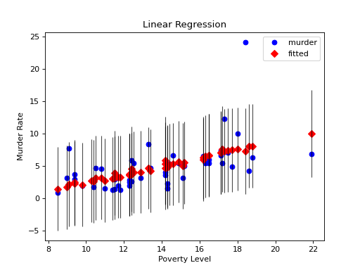

statsmodels.graphics.regressionplots.plot_fit¶
-
statsmodels.graphics.regressionplots.plot_fit(results, exog_idx, y_true=None, ax=None, **kwargs)[source]¶ Plot fit against one regressor.
This creates one graph with the scatterplot of observed values compared to fitted values.
Parameters: - results (result instance) – result instance with resid, model.endog and model.exog as attributes
- x_var (int or str) – Name or index of regressor in exog matrix.
- y_true (array_like) – (optional) If this is not None, then the array is added to the plot
- ax (Matplotlib AxesSubplot instance, optional) – If given, this subplot is used to plot in instead of a new figure being created.
- kwargs – The keyword arguments are passed to the plot command for the fitted values points.
Returns: fig – If ax is None, the created figure. Otherwise the figure to which ax is connected.
Return type: Matplotlib figure instance
Examples
Load the Statewide Crime data set and perform linear regression with poverty and hs_grad as variables and murder as the response
>>> import statsmodels.api as sm >>> import matplotlib.pyplot as plt
>>> data = sm.datasets.statecrime.load_pandas().data >>> murder = data['murder'] >>> X = data[['poverty', 'hs_grad']]
>>> X["constant"] = 1 >>> y = murder >>> model = sm.OLS(y, X) >>> results = model.fit()
Create a plot just for the variable ‘Poverty’:
>>> fig, ax = plt.subplots() >>> fig = sm.graphics.plot_fit(results, 0, ax=ax) >>> ax.set_ylabel("Murder Rate") >>> ax.set_xlabel("Poverty Level") >>> ax.set_title("Linear Regression")
>>> plt.show()
(Source code, png, hires.png, pdf)

{kind=link}
{kind=link}